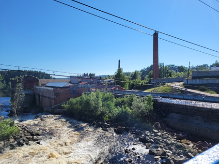

Первоначально Ляскеля входила в состав волости Сортавала, а затем принадлежала муниципалитету Харлу, который был передан Финляндии Советским Союзом. Рядом с работавшими там лесопилками были построены деревообрабатывающий завод и бумажная фабрика в Ляскеля, производившая в 1905 году оберточную бумагу. После Второй мировой войны фабрика также производила газетную бумагу. Бумажная фабрика в Ляскеля и целлюлозно-бумажная фабрика в Харлу были объединены в одну компанию в 1958 г. С 1973 по 1990-е годы фабрика в Ляскеля производила четверть советской обойной бумаги, а также писчей бумаги. Он прекратил свою деятельность в марте 2004 года. Планируется полная реконструкция завода.
